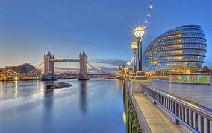
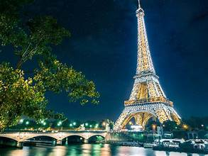
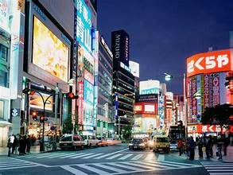

London
London is one of the world’s most cosmopolitan cities. It is the largest metropolis in the United Kingdom, and it is also the country’s economic, transportation, and cultural centre.
In addition to its history, art, and politics, London is a popular tourist destination for its wide variety of museums, shops, restaurants, and sports teams.
Paris
Paris, the capital of France, is located in the north-central portion of the country. It constitutes one of the départements of the Île-de-France administrative region and is France's most important centre of commerce and culture.
The city is home to the Eiffel Tower, one of the world's premier tourist attractions, which opened to the public on May 15, 1889.
Tokyo
Tokyo, city and capital of Tokyo to (metropolis) and of Japan. It is located at the head of Tokyo Bay on the Pacific coast of central Honshu.
t is the focus of the vast metropolitan area often called Greater Tokyo, the largest urban and industrial agglomeration in Japan.
